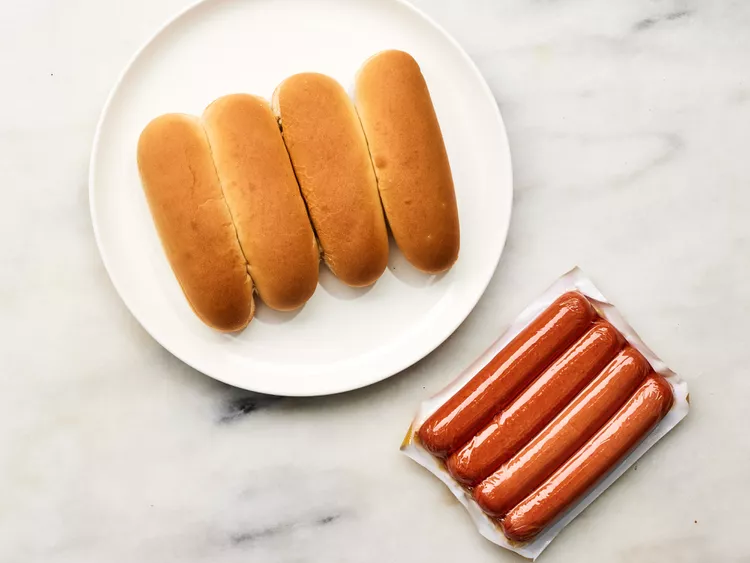
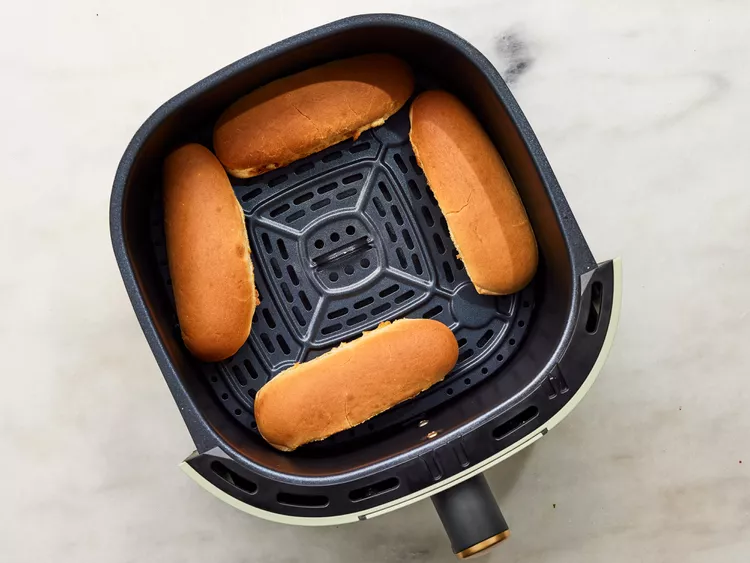
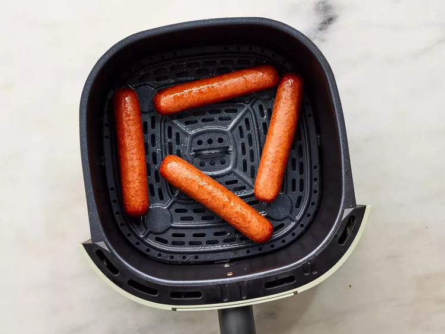
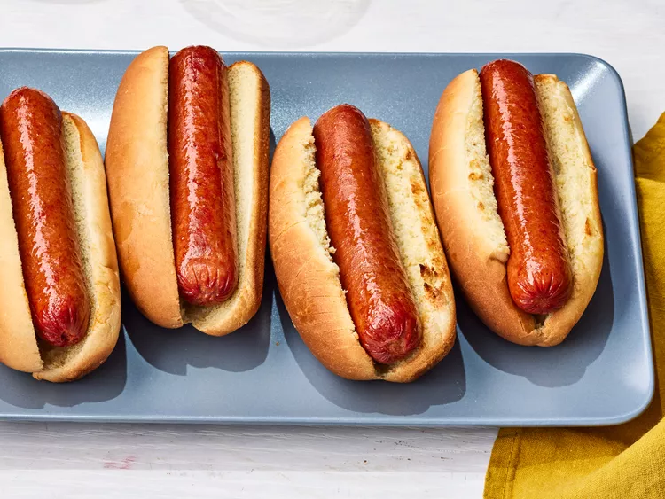

Hotdog

Air Fryer Hot Dogs provide a quick, grill-quality result with a snappy exterior and juicy center. By toasting the buns alongside the franks, you achieve a perfect contrast of textures in just minutes.
This method is ideal for a fast, low-mess meal that works with any classic toppings. It’s a reliable way to get consistent, delicious results without firing up a grill.
Ingredients
- The Essentials
-
4 hot dogs sausages
-
4 hot dog buns
- Recommended Toppings (Optional):
-
Ketchup, mustard, or relish
-
Sauerkraut or pickles
-
Chili or shredded cheese
-
Gather all ingredients. Preheat an air fryer to 400 degrees F (200 degrees C).

-
Place buns in a single layer in the air fryer basket; cook in the preheated air fryer until crisp, about 2 minutes. Remove buns to a plate.

-
Place hot dogs in a single layer in the air fryer basket; cook for 3 minutes.

- Serve hot dogs in toasted buns.

Home